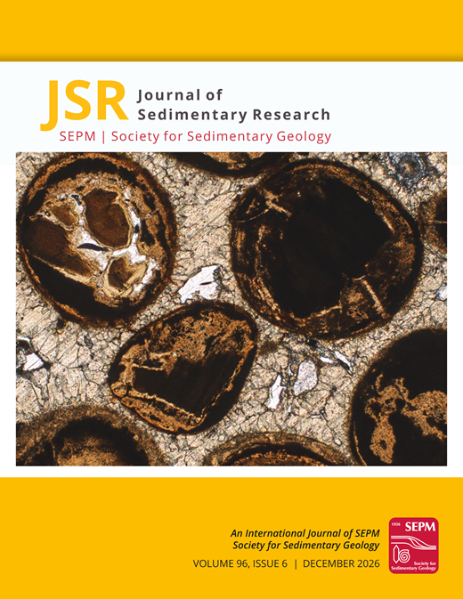

NEWS
News
-
2026
New paperSiderite clumped isotopes paper published in Journal of Sedimentary Research
Our paper, “Facies-specific siderite clumped isotopes indicate subtropical climate in the Paleocene mid-latitude continental interior”, is now out in Journal of Sedimentary Research. Our work combines sedimentology, petrography, mineralogy, microanalytical tools, and bulk and clumped isotopes to distinguish siderite formed in different depositional facies in the Wind River Basin, Wyoming. Using these facies-specific Δ47 signatures, we show that the Paleocene continental interior at mid-latitudes had a subtropical climate. The cover of this issue features an ooidal ironstone we found in the Shotgun Member of the Fort Union Formation, in which iron-clay–coated grains are cemented by siderite spar. Many thanks to my co-authors and advisors, Miquela Ingalls, Brian S. Currie, and Max K. Lloyd!

JSR 96(6), 2026